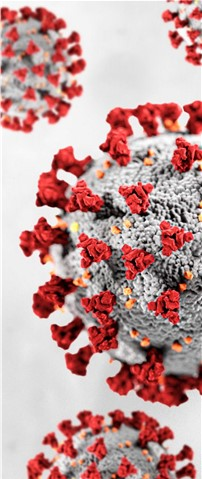

Origen del Covid 19
-
Inicio
Origen Covid 19
En diciembre de 2019 hubo un brote epidémico de neumonía de causa desconocida en Wuhan,
provincia de Hubei, China; el cual, según afirmó más tarde Reporteros Sin Fronteras, llegó a afectar a más
de 60 personas el día 20 de ese mes.
Según el Centro Chino para el Control y Prevención de Enfermedades (CCDC), el 29 de diciembre un hospital
en Wuhan (Hospital Provincial de Medicina Integrada Tradicional China y Occidental, también conocido como
el hospital de Xinhua,) admitió a 4 individuos con neumonía, quienes trabajaban en un mercado de esa ciudad.
El hospital informó esto al CCDC, cuyo equipo en la ciudad inició una investigación. El equipo encontró más
casos relacionados al mercado y el 30 de diciembre las autoridades de salud de Wuhan comunicaron los casos
al CCDC, que envió expertos a Wuhan para apoyar la investigación. Se obtuvieron muestras de estos pacientes
para realizar análisis de laboratorio.
El 31 de diciembre, el Comité de Salud Municipal de Wuhan informó a la Organización Mundial de la Salud (OMS)
que 27 personas habían sido diagnosticadas con neumonía de causa desconocida, habiendo 7 en estado crítico;
la mayoría de estos casos eran trabajadores del mencionado mercado. Para el 1 de enero de 2020, el mercado
había sido cerrado y se había descartado que el causante de la neumonía fuera el SARS, el MERS, gripe, gripe
aviaria u otras enfermedades respiratorias comunes causadas por virus.
El 7 de enero de 2020 los científicos chinos habían aislado el virus causante de la enfermedad, y realizaron
la secuenciación del genoma. Esta secuenciación estuvo disponible para la OMS el 12 de enero de 2020,
permitiendo a los laboratorios de diferentes países producir diagnósticos específicos vía pruebas de PCR.
El 12 de enero de 2020, las autoridades chinas habían confirmado la existencia de 41 personas infectadas con
el nuevo virus, quienes comenzaron a sentir síntomas entre el 8 de diciembre de 2019 y el 2 de enero de 2020,
los cuales incluían: fiebre, malestar, tos seca, dificultad para respirar y fallos respiratorios; también se
observaron infiltrados neumónicos invasivos en ambos pulmones observables en las radiografías de tórax.
